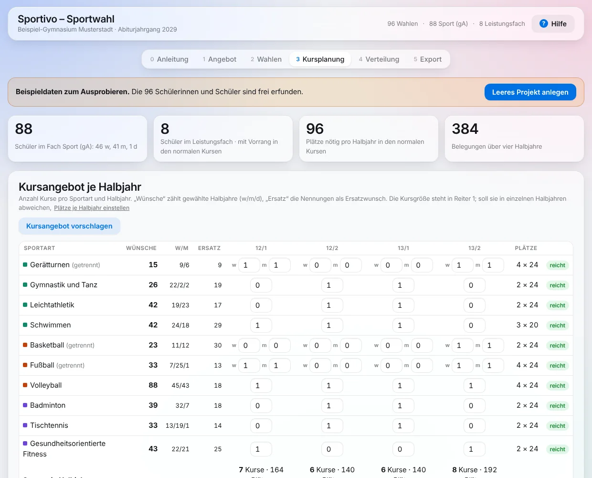
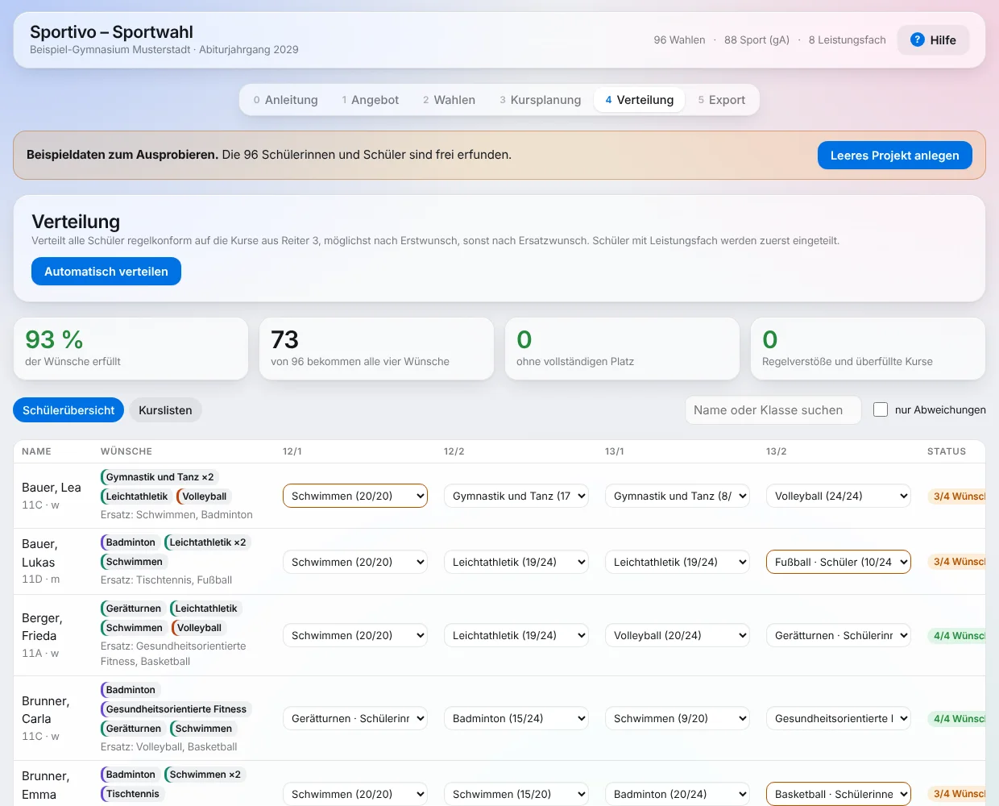

Sportwahl
Die Sportartenwahl für die Jahrgangsstufen 12 und 13 im neunjährigen Gymnasium – von der Wahl über Mebis bis zu fertigen Kurslisten.

Wahl über Mebis, Planung hier.
Die Schülerinnen und Schüler brauchen weder Konto noch App. Alles, was sie eingeben, läuft über die gewohnten Mebis-Kurse.
- Angebot festlegen – Sportarten, Leistungsfach und Kursgrößen Ihrer Schule.
- Wahlbogen in Mebis – den erzeugten Bogen hochladen. Er lässt nur regelkonforme Wahlen zu und erzeugt einen Wahlcode.
- Codes abgeben – die Schüler fügen ihren Code in eine Mebis-Aktivität „Feedback“ ein.
- Einlesen, planen, verteilen – Antworten hineinkopieren, Kursangebot vorschlagen lassen, automatisch verteilen und nachsteuern.
- Weitergeben – Kurslisten als CSV für Excel/ASV, Druckansicht und Projektdatei für die Oberstufenkoordination.

Nur in Ihrem Browser.
Die Seite wird einmal geladen, danach rechnet und speichert alles lokal im Browser. Es werden keine Namen oder Wahlen an diese Website oder an Dritte übertragen.
Darum gilt: Die Daten liegen nur in diesem Browser auf diesem Gerät. Wer den Browserverlauf samt Websitedaten löscht – oder an Schulrechnern, die beim Abmelden zurückgesetzt werden – verliert sie.
Tipp: Unter „5 Export“ regelmäßig die Projektdatei speichern. Mit ihr geht es auf jedem Gerät weiter.
Grundlage: KMBek „Durchführung des Sportunterrichts in den Jahrgangsstufen 12 und 13 (neunjähriges Gymnasium)“ vom 1. August 2022, BayMBl. 2022 Nr. 485. Ohne Gewähr – maßgeblich sind die geltenden Vorgaben und die Entscheidung der Schule.
Kostenlos – und das soll so bleiben.
Alle Apps sind für Lehrkräfte frei nutzbar. Wenn sie Ihnen im Schulalltag Zeit sparen, freue ich mich über einen Kaffee. Freiwillig, ohne Gegenleistung, ohne Konto.
Die Spende läuft über einen externen Anbieter; erst beim Klick verlassen Sie diese Seite.
Von einer Lehrkraft, für Lehrkräfte.
Ich bin Julian Theis und unterrichte Englisch und Italienisch an einem Gymnasium in München. Die Apps entstehen aus konkreten Problemen im eigenen Schulalltag – oder weil Kolleginnen und Kollegen gefragt haben, ob es dafür nicht etwas Einfacheres gäbe.
Konzipiert, fachlich geprüft und im Unterricht getestet von mir; programmiert mit Unterstützung von KI (Claude von Anthropic).
Fragen, Fehler, Ideen? theis@ovmg.de